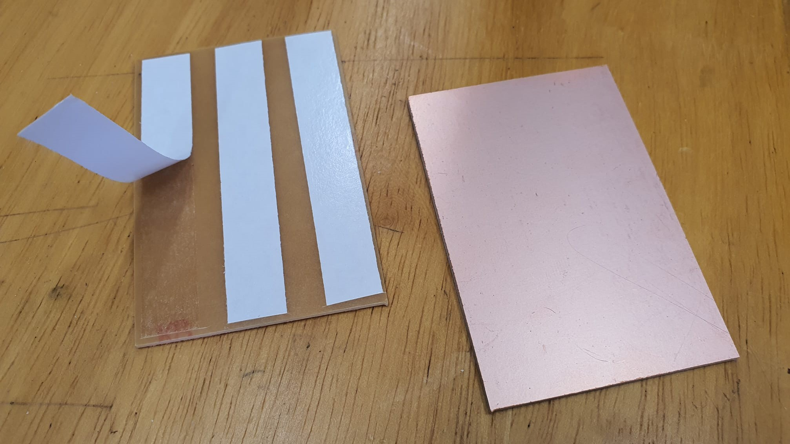
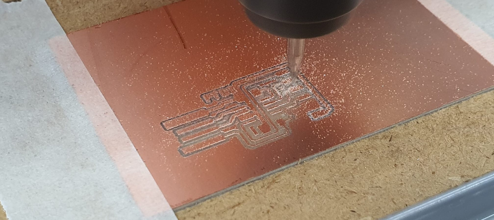
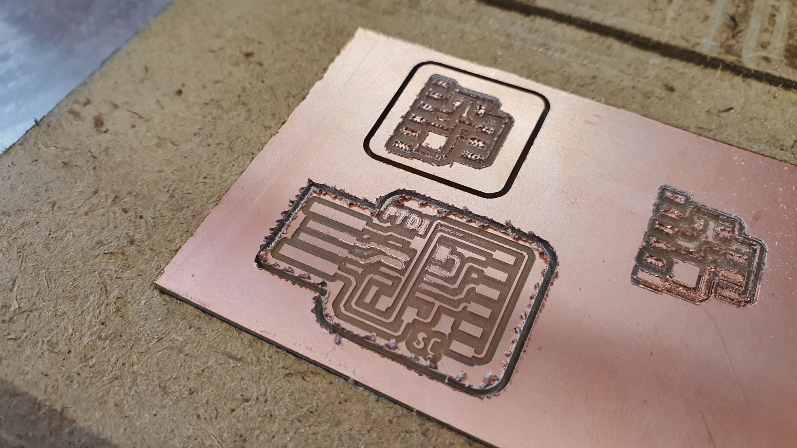
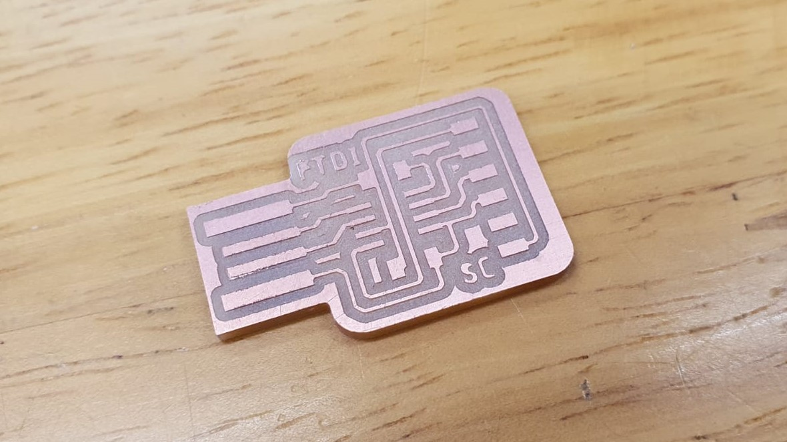

Electronics Production
| To fabricate the FTDI board, i first downloaded the PCB traces and outline. | |
|
Using mods, i generated the G-code for the milling machine (Stepcraft 420) programs > open server program > G-code > mill 2D PCB png I set the settings according to whether it is the trace or outline. |
 |
| I used double sided tape and masking tape to secure the PCB (FR1) to MDF board on the Stepcraft 420. |  |
| I loaded the nc file onto the software (UCCNC). |  |
| I used a 0.4mm mill for the traces and 0.8mm mill for the outline. Next, i set the Z-axis using the sensor and the X & Y-axis by positioning the mill on the origin of the PCB using the jog function. |  |
| While milling the outline of the PCB i realised that there are quite alot of burs at the edges, this is probably because the tool is blunt. Since the burs are only on the outer part of the board, it does not affect the circuit, i just removed the extra copper at the edges afterwards. |  |
| Completed FTDI board. The process is also repeated for the FDTI to UPDI board. |  |